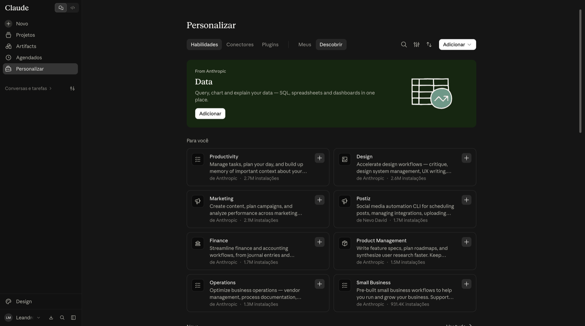
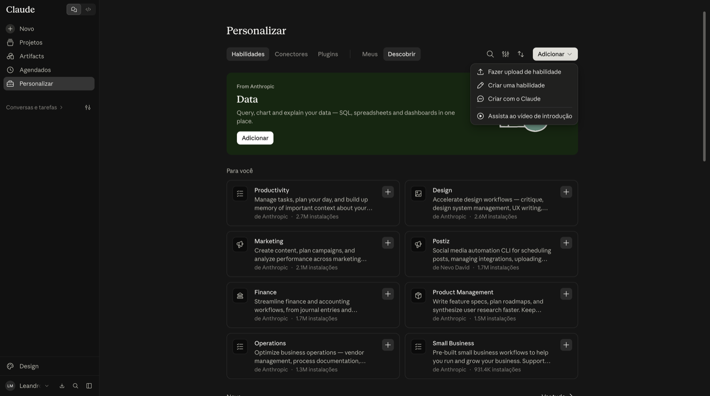
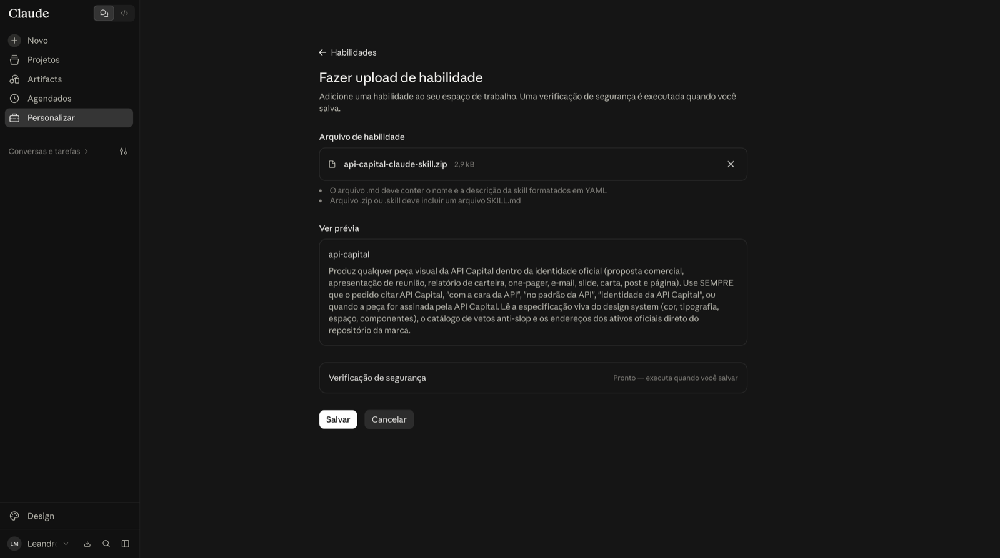
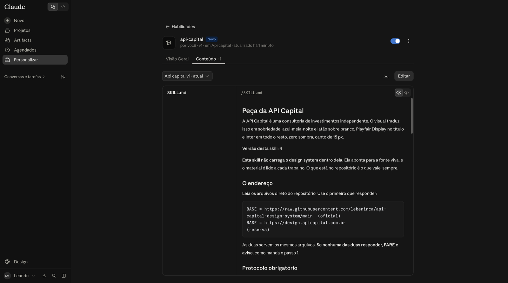
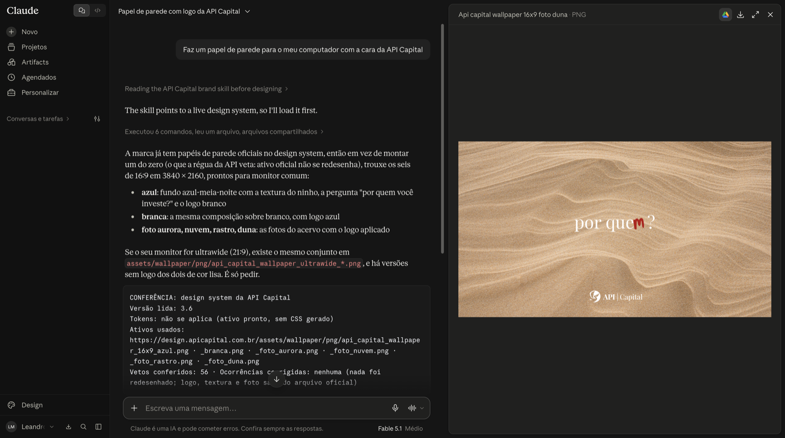
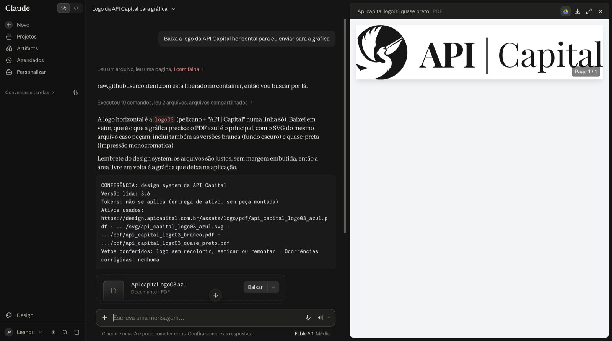
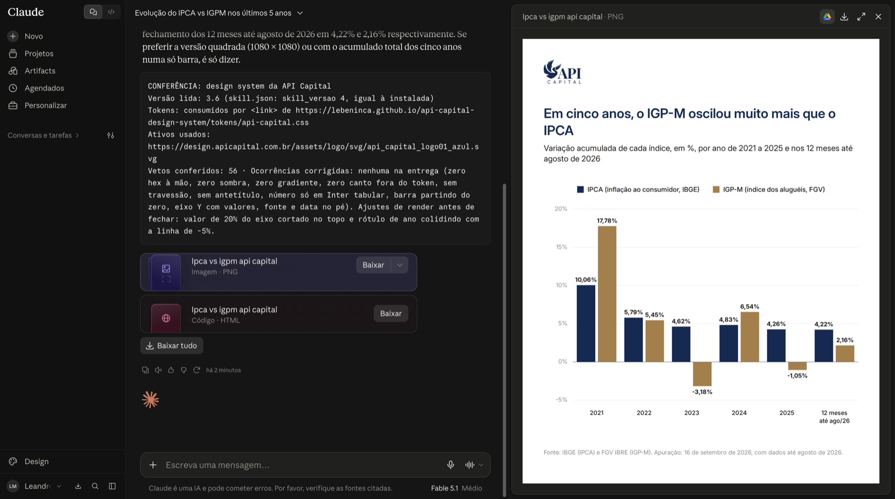

Usando Claude
Instale a skill uma vez e peça, em qualquer conversa com o Claude, peças no padrão da API Capital.
Este é o caminho recomendado. Não precisa de conta extra, e a skill lê o design system atualizado a cada pedido: mudou aqui, muda na próxima peça, sem baixar nada de novo.
1. Baixe a skill
O arquivo tem poucos KB e vai para a sua pasta Downloads.
Baixar a skillNo Safari, em vez do arquivo .zip pode aparecer uma pasta
api-capital. Tudo bem: no passo 4, suba o arquivo SKILL.md que
está dentro dela.
2. Abra Personalizar
No Claude, clique em Personalizar na barra lateral e fique na aba Habilidades.

3. Adicionar, Fazer upload de habilidade
Clique em Adicionar, no canto superior direito, e escolha Fazer upload de habilidade.

4. Suba o arquivo e salve
Arraste o arquivo baixado para a caixa, ou clique nela para escolher. Vale
.zip, .skill ou o SKILL.md. A prévia mostra
api-capital. Clique em Salvar.

5. Confira se está ligada
A skill api-capital aparece com a chave ligada, em azul. Pronto.

Já tinha uma versão instalada? Apague a antiga pelo menu de três pontos antes de subir a nova.
No dia a dia
Abra uma conversa nova e peça em português, do seu jeito. A skill entra sozinha quando o pedido fala da API Capital. No fim de cada entrega vem um bloco CONFERÊNCIA, que diz a versão do design system lida e os arquivos usados.
“Faz um papel de parede para o meu computador com a cara da API Capital”
O Claude entrega os papéis de parede oficiais, prontos para baixar.

“Baixa a logo da API Capital horizontal para eu enviar para a gráfica”
Vem a logo em PDF e SVG, que é o que a gráfica pede, com as versões branca e quase-preta.

“Faz um gráfico para eu postar no meu instagram com a cara da API, mostrando a evolução do IPCA vs IGPM nos últimos 5 anos.”
O Claude busca os dados, monta o post e entrega um PNG pronto para o feed.

Use o PNG. Junto pode vir um arquivo HTML; a prévia dele dentro do Claude aparece sem cores e sem logo, e isso é esperado. Confira sempre os números antes de postar.
Quando sair versão nova
O design system se atualiza sozinho. Só quando a própria skill mudar, o Claude avisa no começo da conversa; aí é repetir os passos acima.
Prefere o Claude Design? Veja Usando Claude Design. Não quer instalar nada? O texto para colar nas instruções de um Projeto está em PROMPT.md.